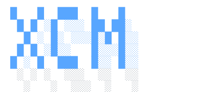
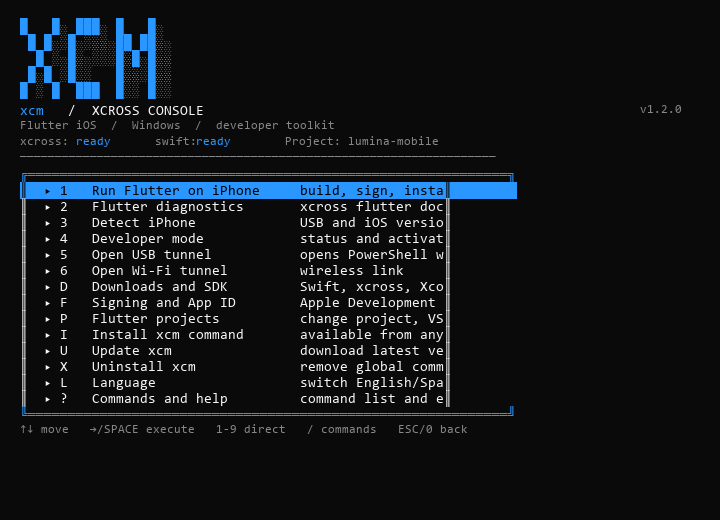
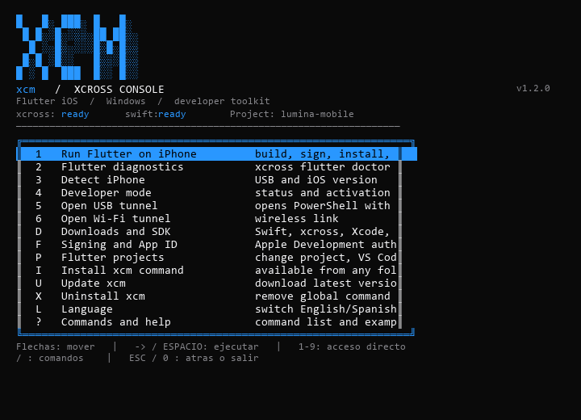

XCross CLI
A beautiful, keyboard-driven terminal experience for Flutter development on Windows and Linux. One-line install, guided setup, xcross integration.
irm https://raw.githubusercontent.com/Ameth1208/xcross-cli/main/windows/xcm-install.ps1 | iex
Get up and running in seconds with a single command. No admin rights required.
Navigate with arrows, execute with space. Command palette with / for quick access.
English and Spanish built in. Switch anytime with xcm language en|es.
Guided installers for Swift, xcross, SDK import and Flutter precache.
Open RSD tunnels for device debugging with one keystroke.
MIT licensed. Contributions welcome on GitHub.
How it works
irm ... | iex
xcm project set ./my-app
xcm run --usb
Commands

CLI menu in action

Actual CLI menu (Windows)